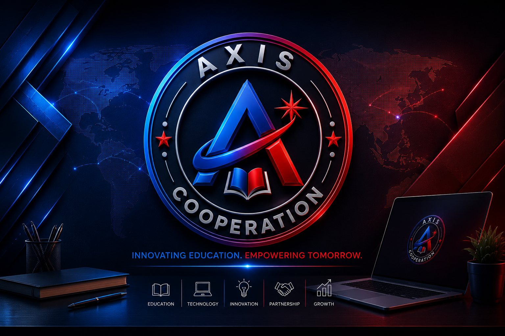

Applied science & engineering
Mechanics, robotics, energy generation, sanitation, and environmental prototypes.
Innovating education. Empowering tomorrow.
Axis Cooperation Ltd, based in Kampala, runs Sunrise Innovation Magazine: a national publication that celebrates secondary-school science, technology, and creative projects, then connects outstanding work to partner universities and tertiary institutions.
About us
We work with headteachers, science-club patrons, ICT teachers, and school administrations across Uganda. Through the Sunrise Innovation Magazine Secretariat, we document authentic student-led work and place it in front of fellow schools, higher education institutions, industry, and policy stakeholders.
Our model is school-centred first, then tertiary. Secondary schools submit innovations. Universities, vocational institutes, and scholarship bodies supply verified admissions and financial-aid information — and consider featured projects for partial or full scholarships.

A flagship project
Illuminating young minds, shaping the future.
The 2026–2027 academic-year edition is a national platform for student-led scientific, technological, and creative problem-solving. Printed and digital copies go to headteachers, career-guidance departments, science clubs, and school libraries.
Who can submit: secondary students (S.1–S.6), guided by a patron teacher, subject instructor, or administrator. There is no limit on the number of projects a school may send.
Mechanics, robotics, energy generation, sanitation, and environmental prototypes.
Mobile apps, websites, automated systems, and digital tools with a clear user impact.
Climate-smart farming, soil preservation, waste management, and sustainability work.
Community health solutions and renewable-energy initiatives from school science clubs.
Girl-child leadership in STEM, career goals, and reports on global science trends.
Outstanding Student Innovation Scholarships
Axis Cooperation has invited universities and tertiary institutions to consider exceptional student work published in the magazine for partial or full scholarships. The Secretariat reviews submissions for authenticity and educational value, then nominates top-tier projects to participating higher-education partners.
Qualifying innovations are forwarded to partner universities for scholarship consideration — a direct reward for creative student talent.
Partner pages carry verified entry requirements, application processes, key dates, and contact channels.
Faculty and admissions officers contribute advice on emerging fields, technical pathways, and the move from secondary to campus.
Dedicated features celebrate female student leadership in science and technology, in line with inclusive participation.
Partnership
Partnership is governed by Terms of Reference, a non-disclosure agreement, and an institutional application. Schools remain the source of student work. Universities, tertiary institutes, and scholarship bodies supply programmes, scholarships, and optional award sponsorship.
Invitation to headteachers: join the Secondary Schools Participation & Innovation Network for the 2026–2027 edition.
Schools are encouraged to send gender-balanced teams. Plagiarism or fabricated results lead to disqualification.
The Higher Education & Scholarship Partnership lets institutions speak directly to science clubs, career masters, and parents.
Institutions designate a coordinator, supply logos and copy, and sign off page proofs before print and digital release.
Download the current pack used with schools and higher-education partners.
Headteachers, academic registrars, admissions, and corporate communications teams can write to the Secretariat. We can meet in person or virtually to tailor a package to a recruitment cycle.
Contact us
Use this form for school participation, project submissions, university partnership, or scholarship enquiries. Detailed procedures and deadlines sit in the attached Terms of Reference.
Axis Cooperation Ltd
P.O. Box 10830
Kampala, Uganda
axiscooperation@gmail.com
0701 087 267 · 0788 340 949
Office of the Chief Executive
Gilbert Mwanamwolho